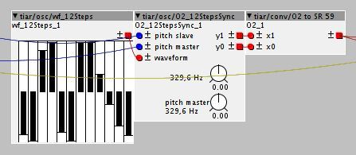
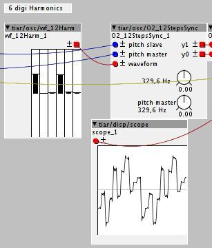

New oscillator: O2_12StepsSync
See the help patch in menu: Help -> Library -> Community -> tiar -> osc -> wf12 -> O2_12stepsSync

This is an evolution of the preceding SixSteps oscillator:
- it have a built-in Master oscillator for sync sounds.
- 12 steps instead of 6 (use tiar/osc/wf_12Steps on waveform inlet)
- oversampling by 2 (interleaved oversampled output: use tiar/conv/O2_to_SR_59 on the output).
It sounds brighter than the SixSteps oscillator.
about tiar/osc/wf12/wf_12Steps
wf_12Steps is a companion object to O2_12StepsSync.
Even if its outlet is "audio" it is not really an audio outlet. The output is consist in the 12 packed values of the sliders.
I firstly created it because of layout issues with vertical sliders. I thought, let's have something that looks like the sel objects. The first version had 12 krate outlet that have to be connected to corresponding 12 k rate inlet on the O2_12stepsSync. It was not very practical. That's the first reason I use packed values in a "audio" signals.
Note that even if it does not generate an actual audio rate signal it can be used with some audio rate objects such as xfade and mix...
about O2_to_SR_59
The output of O2_12stepsSync consists in two interleaved audio rate outlets: y1 and y0 allowing to use a 96kHz sample rate.
O2_to_SR_59 uses a 59 tap decimation filter to come back to the standard 48 kHz
UPDATE:
tiar/osc/wf12/wf_12Harm
see menu: Help->Library->community->tiar->osc -> wf12 -> wf_12Harm

wf_12Harm is a companion object to O2_12StepsSync quite similar to wf_12Steps.
It generates a 12 step waveform defined by the amplitudes of 6 harmonics.
UPDATE:
tiar/osc/wf12/wf_12Bank
see menu: Help->Library->community->tiar->osc -> wf12->wf_12Bank

wf_12Bank is a companion object to O2_12StepsSync quite similar to wf_12Steps and wf_12Harm.
It generates a waveform selected by an integer inlet.
16 waveforms are available so far:
- 0 sin
- 1 saw
- 2 sqr
- 3 sqr33
- 4 sqr25
- 5 half sin
- 6 R string1
- 7 R string2
- 8 S string1
- 9 S string2
- 10 squizor
- 11 thirdy
- 12 jigsaw
- 13 res
- 14 4321
- 15 Randy

 Ill take a look at some of the MI objects
Ill take a look at some of the MI objects  Technical details:
Technical details: